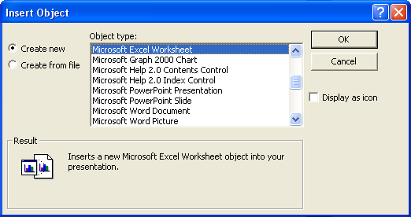
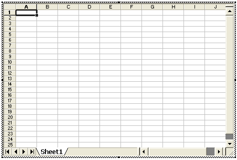
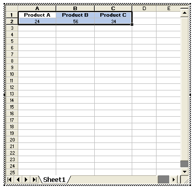
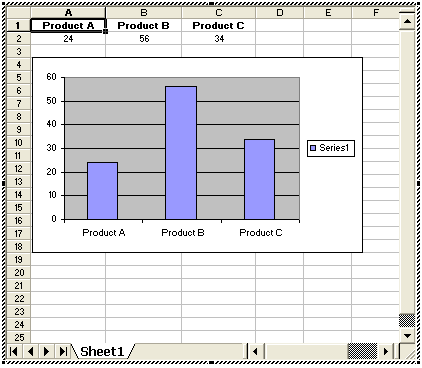
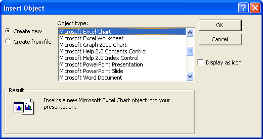
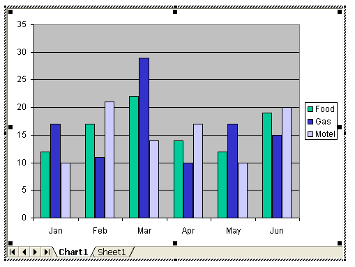
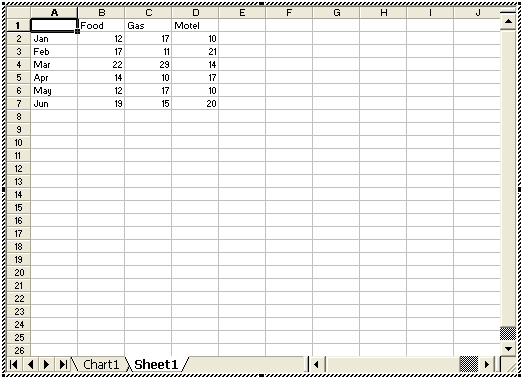

Free
powerpoint
Tutorials
|
Free
powerpoint
Tutorials
|
|
 home home |
Stay at Home and Learn | ||||
Insert a blank Excel Worksheet onto a PowerPoint Slide |
|||||
|
Part 1, 2
You can have a blank Excel worksheet appear on your slide. The cells of the worksheet will then be available to type into. To try it for yourself, insert a blank slide from the PowerPoint menu bar. Click Insert > Object again. The dialogue box will look like this:  From the Object type list, select Microsoft Excel Worksheet. Then click OK. Your slide will look like the one in the image below:  This is an Excel Worksheet embedded into the slide. The image above shows that cell A1 is selected. In the Image below, we've entered some data:  You can even create an Excel chart, once you've entered your data. Click Insert from the PowerPoint menu bar, and you'll see a Chart option. Click the other menus and you'll see a lot of them now have the same options that you find in Excel. In the image below, we've created an Excel chart from our simple data:  If you're familiar with Excel, have a play around with the menu option. You can do quite a lot from PowerPoint that you can do in Excel itself!
Insert a Ready-Made Excel ChartThe third Excel option is really just a variation of the above. This time, however, you get a default chart and a worksheet already prepared. Insert another blank slide, and click Insert > Object again. From the dialogue box, select Microsoft Excel Chart from the list:  Click OK, and your slide will look like this:  As you can see, a chart is already prepared. But you can change this. Click on Sheet1 at the bottom to see the data:  You can enter your own data here, and the chart will update automatically.
In the next section, we'll take a look at adding video and sound to your presentations.
|
||||